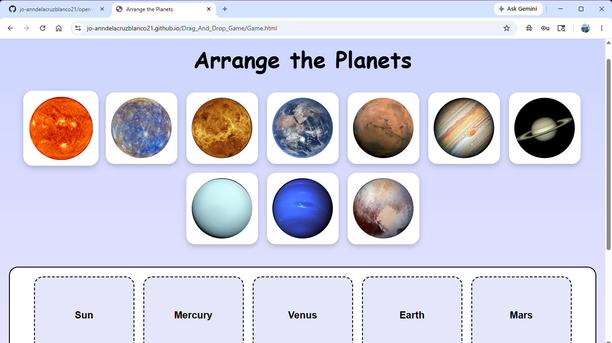
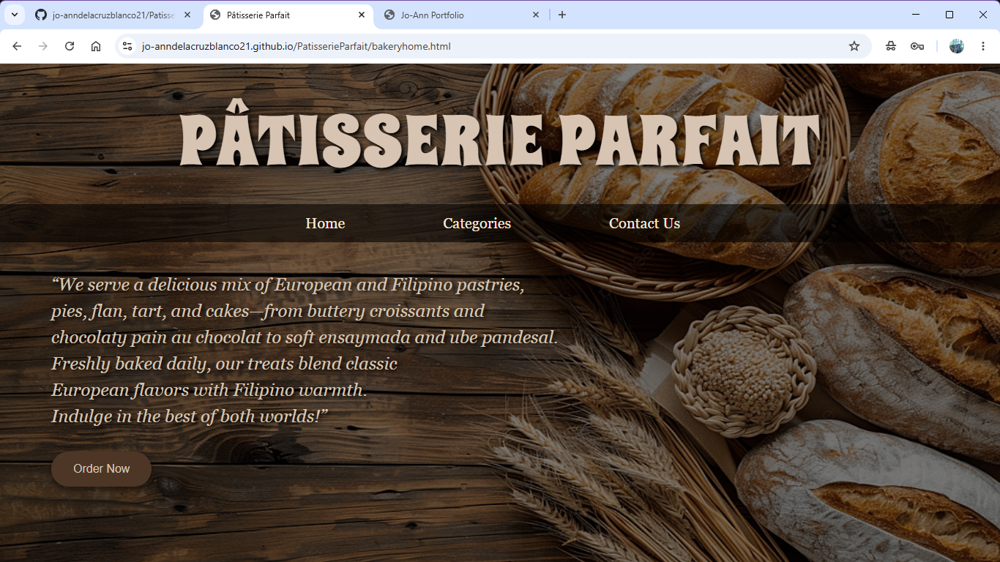

JO-ANN D. BLANCO
2nd Year BSIT Student
"Working with a file, every day, little by little, until the orchestra's collective qualities emerge." — James Levine
About Me
"Working with a file, every day, little by little, until the orchestra's collective qualities emerge." — James Levine
About Me
Hello! I am Jo-Ann D. Blanco, a 2nd Year BSIT student at Cavite State University – Imus Campus. I am passionate about web design, development, and creative digital work. My goal is to create enjoyable and interesting websites that improve user experience.

My Favorite Drag and Drop HTML Game Project
Tech Used: HTML, CSS, JavaScript

My first college project together with my classmates and friends.
Tech Used: HTML, CSS, JavaScript, JSON